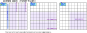
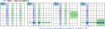
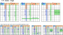
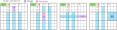

Franken/Mutant Exocet
Franken/Mutant Exocet は Exocet の CrossLine を拡張します。拡張 CrossLine上に Target を配置し、これによって SLine と Companion が決まります。
SLineが2つの CoverLine でカバーされるなら Exocet Locked が成立します。
拡張 CrossLine では、"Cross"の呼称は不自然ですが、素朴な Exocet の定義に従い、CrossLine を用います。
Franken/Mutant Exocet は、拡張 CrossLine、Target、Companion の定義が拡張されています。Exocet の成立要件は、標準の Exocet と同じです。
Exocet Franken/Mutant(FM) サンプル
拡張 CrossLine
basicな Exocet では、次の手順で CrossLine を定義します。
- Baseの位置と方向を決める。
- CrossBand-b は Base 位置から決まる。
- CrossBand-n から CrossLine-n を選択する(n=1,2)。
拡張 CrossLine では、Baseの位置と方向、および CrossBand-b を定めるまでは、同じです。
CrossLineの基となる Bandは、Cross-Band、Paralell-Band、Block-Band の 3タイプがあります。異なる Band 内に 2つの CrossLine-1、CrossLine-2 を定めます。
拡張 CrossLine では、複数の CrossLine が交差することがあります。Exocet の成立要件により、CrossLine が交差するセルは、Base候補数字を含むことができません。

次の図は、拡張 CrossLine の例です。

Target
3つの CrossLine の Escape 領域を除く位置に、2つの Target を配置します。2 Targets / 3 CrossLines であり、1つの CrossLine には Target はありません。

Companion、SLine
Companionは、Cross-type、Paralell-type の CrossLine に定義され、行・列 house と ブロック house の2つの制約が生じるセルに定義されます。
Block-type の CrossLine には Companion はありません。

Target、Companion、SLine の関係は、標準的なタイプの Exocetの要素 と同じです。